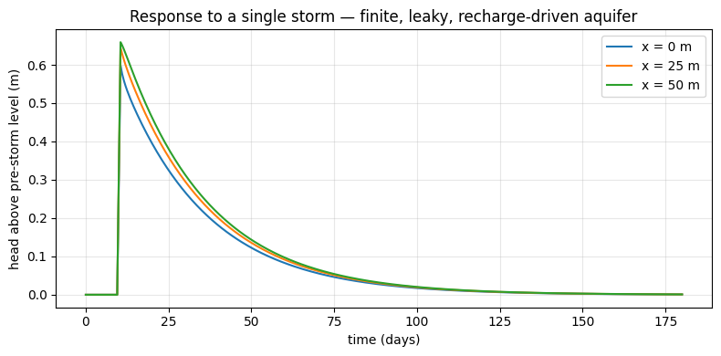

Flowsim quickstart — a runnable reference implementation#
This notebook is a standalone, dependency-free reference implementation of the governing
equation and boundary conditions documented in methodology.md — the same
1D transient groundwater flow problem Flowsim solves analytically with Carslaw and Jaeger (1959)
unit response functions.
Why not just
pip install flowsimand callrun_model()? At the time of writing, theflowsimpackage on PyPI fails to import (it’s version0.0.0, its own metadata describes it as an unrelated Edcrop script, and it’s missing a required module file). Until that’s fixed upstream, this notebook solves the same physics numerically (finite differences, implicit time-stepping) so the examples.md scenarios are actually runnable. If you have a working local build of the realflowsimpackage, the YAML snippets inexamples.mdare what you’d feed toflowsim.run_model()instead.
The governing equation, for hydraulic head h(x, t) in an aquifer 0 <= x <= L:
S * dh/dt = T * d2h/dx2 + R(t)
with a no-flow boundary at x = L (or L set large enough to approximate a semi-infinite
aquifer), and, at x = 0, either:
a perfect connection:
h(0, t) = h_b(t)(Dirichlet), ora leaky connection:
T * dh/dx |_0 = C * (h_b(t) - h(0, t))(Robin), per eq. (11) in methodology.md.
1. The solver#
import numpy as np
from scipy import sparse
from scipy.sparse.linalg import spsolve
from scipy.special import erfc
import matplotlib.pyplot as plt
def simulate_1d(T, S, L, dx, dt, nsteps, C=None, h_b=None, R=None, h0=0.0):
'''Implicit finite-difference solver for S*dh/dt = T*d2h/dx2 + R(t)
on 0 <= x <= L, no-flow at x=L.
Boundary at x=0:
- C is None -> Dirichlet h(0,t) = h_b[t] (a 'perfect' connection)
- C is given -> Robin: T*dh/dx|_0 = C*(h_b[t]-h(0,t)) (a 'leaky' connection)
h_b, R : arrays of length nsteps+1, values at t = 0, dt, 2*dt, ..., nsteps*dt
Returns: x (nx,), h (nsteps+1, nx)
'''
nx = int(round(L / dx)) + 1
x = np.linspace(0, L, nx)
if h_b is None:
h_b = np.zeros(nsteps + 1)
if R is None:
R = np.zeros(nsteps + 1)
h = np.zeros((nsteps + 1, nx))
h[0, :] = h0
alpha = T * dt / (S * dx**2)
for n in range(nsteps):
A = sparse.lil_matrix((nx, nx))
b = np.zeros(nx)
for i in range(1, nx - 1):
A[i, i - 1] = -alpha
A[i, i] = 1 + 2 * alpha
A[i, i + 1] = -alpha
b[i] = h[n, i] + R[n + 1] * dt / S
i = nx - 1 # no-flow at x = L (mirror node)
A[i, i - 1] = -2 * alpha
A[i, i] = 1 + 2 * alpha
b[i] = h[n, i] + R[n + 1] * dt / S
if C is None:
A[0, 0] = 1.0
b[0] = h_b[n + 1]
else:
beta = C * dt / (S * dx / 2)
gamma = T * dt / (S * (dx / 2) * dx)
A[0, 0] = 1 + beta + gamma
A[0, 1] = -gamma
b[0] = h[n, 0] + beta * h_b[n + 1] + R[n + 1] * dt / S
h[n + 1, :] = spsolve(A.tocsr(), b)
return x, h
2. Sanity check against Flowsim’s analytical solutions#
Before trusting the solver for new scenarios, check it against the two closed-form solutions in
Table 1 of methodology.md that have simple, well-known analytical forms:
sinf_head_perf (a step change in boundary head, perfect connection, semi-infinite aquifer) and
sinf_head_leak (same, but with a leaky connection).
# sinf_head_perf: h_unit(x,t) = erfc(x / (2*sqrt(D*t))) [D = T/S]
T, S = 200.0, 0.15
L, dx, dt, nsteps = 4000.0, 5.0, 0.25, 400 # L large -> approximates semi-infinite
h_b = np.ones(nsteps + 1) * 1.0
x, h = simulate_1d(T, S, L, dx, dt, nsteps, C=None, h_b=h_b)
t_check = 50.0
n_check = int(round(t_check / dt))
D = T / S
x_pts = np.array([0, 20, 50, 100, 200])
idx = [int(round(xx / dx)) for xx in x_pts]
analytic = erfc(x_pts / (2 * np.sqrt(D * t_check)))
numeric = h[n_check, idx]
print(f"{'x (m)':>8} {'analytic':>10} {'numeric':>10}")
for xx, a, n in zip(x_pts, analytic, numeric):
print(f"{xx:8.0f} {a:10.4f} {n:10.4f}")
print(f"\nmax abs error: {np.max(np.abs(analytic - numeric)):.5f}")
x (m) analytic numeric
0 1.0000 1.0000
20 0.9563 0.9562
50 0.8911 0.8909
100 0.7842 0.7838
200 0.5839 0.5832
max abs error: 0.00064
# sinf_head_leak: Carslaw & Jaeger's 'radiation' (Robin) boundary solution
def analytic_leak(x, t, T, S, C):
D = T / S
term1 = erfc(x / (2 * np.sqrt(D * t)))
term2 = np.exp(C * x / T + C**2 * D * t / T**2) * erfc(x / (2 * np.sqrt(D * t)) + C * np.sqrt(D * t) / T)
return term1 - term2
C = 3.0
x2, h2 = simulate_1d(T, S, L, dx, dt, nsteps, C=C, h_b=h_b)
numeric2 = h2[n_check, idx]
analytic2 = analytic_leak(np.maximum(x_pts, 1e-6), t_check, T, S, C)
analytic2[0] = analytic_leak(1e-9, t_check, T, S, C)
print(f"{'x (m)':>8} {'analytic':>10} {'numeric':>10}")
for xx, a, n in zip(x_pts, analytic2, numeric2):
print(f"{xx:8.0f} {a:10.4f} {n:10.4f}")
print(f"\nmax abs error: {np.max(np.abs(analytic2 - numeric2)):.5f}")
x (m) analytic numeric
0 0.8588 0.8585
20 0.8166 0.8163
50 0.7544 0.7540
100 0.6543 0.6538
200 0.4728 0.4722
max abs error: 0.00065
Both agree with the analytical solution to within the finite-difference scheme’s own discretization error (<0.001 m for a 1 m step) — good enough to trust the solver for the scenarios below.
3. A recharge-driven, finite, leaky aquifer (fin_rech_leak)#
This is the function used in the Sillerup, Knivsbæk, and most of the applied examples: a finite
aquifer of length L, no-flow at the far end, recharge R(t) as the driving boundary condition,
and a leaky connection to a stream/drain at x = 0.
T, S, C, L = 100.0, 0.15, 0.5, 75.0
dx, dt = 2.5, 0.5
days = 180
nsteps = int(days / dt)
# a single heavy-rain day, otherwise dry
R = np.zeros(nsteps + 1)
storm_day = 10
R[int(storm_day/dt):int(storm_day/dt)+int(1/dt)] = 0.05 / dt # 50 mm in one day, spread over dt steps
x, h = simulate_1d(T, S, L, dx, dt, nsteps, C=C, R=R, h_b=np.zeros(nsteps+1))
t = np.arange(nsteps + 1) * dt
fig, ax = plt.subplots(figsize=(8, 4))
for xx in [0.0, 25.0, 50.0]:
i = int(round(xx / dx))
ax.plot(t, h[:, i], label=f"x = {xx:.0f} m")
ax.set_xlabel("time (days)")
ax.set_ylabel("head above pre-storm level (m)")
ax.set_title("Response to a single storm — finite, leaky, recharge-driven aquifer")
ax.legend()
ax.grid(alpha=0.3)
plt.tight_layout()
plt.show()

The response arrives fastest and largest closest to the leaky boundary (x = 0), and is smaller
and delayed further into the aquifer — exactly the superposition behaviour equations (2)-(4) in
methodology.md describe, just solved numerically here instead of via the
unit-response-function sum.
Next: applied-examples.ipynb runs several real-world scenarios from
examples.md using this same solver.